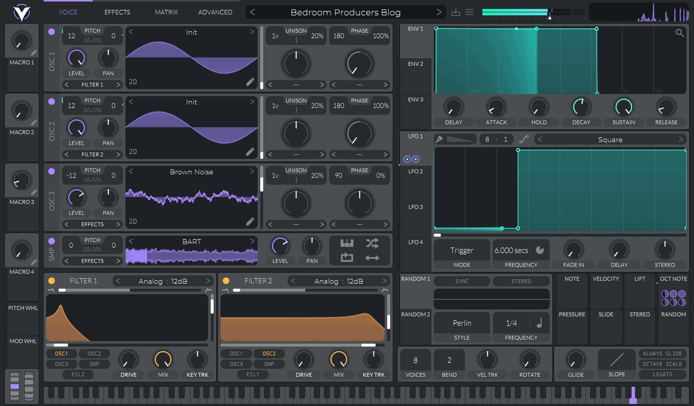

Sound design process, tools for designing the sounds, and basic sound theory
All sounds are made of different variations of the four basic waveforms.
Those waveforms are:
We can manipulate these waves in infinite ways to achieve
different sounds by using effects in
synthesizers.
Some effects are but not limited to:
As far as wave manipulation for effects, you can use any of the available effects in your synthesizer or with any plug-ins you may have. Some of the top synthesizers include Serum, Vital, and Omnisphere. These synthesizers offer a wide variety of ways to design sound in their own unique ways and are offered at different price points. For this example, we will use Vital made by Matt Tytel.
As you can see in the OSC(oscillator) 1 lane, there is a sine wave placed which gives us the basic sound foundation of all sounds. However, there is more than OSC lane active. On the second one, there is also a sine wave. The third one has a very unatural shape, this is due to wavetable manipulation. This wave started off as a sine wave, but was edited to add several different harmonics to make it look the way it does, thus giving us a grittier sound.